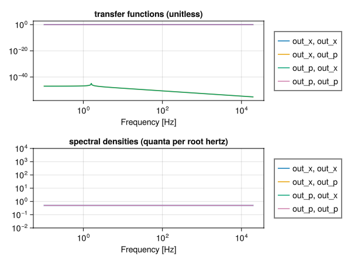

using SLHQuantumSystems
using SecondQuantizedAlgebra
using Symbolics
using ControlSystems
using GLMakie
mode = MechanicalMode("")
@variables Ω m Γ
b = Destroy(FockSpace(:mass), operatornames(mode)[1])
paramdict = Dict(zip(nameof.([Ω, m, Γ]), [Ω, m, Γ]))
opdict = Dict(getfield(b, :name) => b)
slh = SLH("mass", [mode], paramdict, opdict, ["in"], ["out"], [1], [Γ * b], Ω * b' * b)
ss = QuantumStateSpace(slh)
qss = toquadrature(ss)
paramdict = Dict(
Ω => 10, #10Hz resonance
m => 4, #kg
Γ => 1.0e-23
)
numeric = substitute(qss, paramdict)
freq_hz = collect(logrange(0.1, 20_000.0, 500))
freq = 2π .* freq_hz500-element Vector{Float64}:
0.6283185307179586
0.6438773900282578
0.6598215286056845
0.6761604870027125
0.6929040420215935
0.7100622125645388
0.7276452656287665
0.7456637224500013
0.7641283647981058
0.7830502414286066
⋮
103329.28189307102
105887.99324887247
108510.0651901959
111197.066695812
113950.60559663222
116772.32953779229
119663.92696455984
122627.12813265534
125663.70614359173output noise spectral density
G = freqresp(numeric, freq)
sd = spectral_density(numeric, freq)SpectralDensityMatrix: 2×2 over 500 frequencies (0.1 – 20000.0 Hz)
Channels: out_x, out_p
Plotting
fig = Figure()
ax_tf = Axis(
fig[1, 1];
xscale = log10, yscale = log10,
xlabel = "Frequency [Hz]",
title = "transfer functions (unitless)"
)
for (ii, iname) in enumerate(sd.names)
for (jj, jname) in enumerate(sd.names)
lines!(ax_tf, freq_hz, abs.(G[ii, jj, :]), label = "$iname, $jname")
end
end
fig[1, 2] = Legend(fig, ax_tf)
ax_noise = Axis(
fig[2, 1];
xscale = log10, yscale = log10,
limits = (nothing, nothing, 10.0e-3, 10.0e3),
xlabel = "Frequency [Hz]",
title = "spectral densities (quanta per root hertz)"
)
for ii in sd.names
for jj in sd.names
lines!(ax_noise, freq_hz, abs.(sd[ii, jj]), label = "$ii, $jj")
end
end
fig[2, 2] = Legend(fig, ax_noise)
fig
This page was generated using Literate.jl.